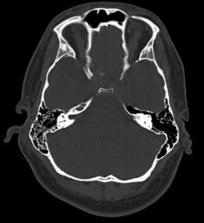

Ficha del catálogo
Fractura de la base del cráneo
- Sistema
- Nervioso
- Modalidad
- TC
- Región
- Base del cráneo y hueso temporal
- Dificultad
- Avanzado
La fractura de la base del cráneo es una lesión traumática de alta energía cuya importancia radica en las estructuras vecinas, ya que puede lesionar pares craneales, la arteria carótida en su trayecto intrapetroso y las cubiertas meníngeas, con riesgo de fístula de líquido cefalorraquídeo y de meningitis.
Técnica
Tomografía de cráneo con adquisición volumétrica de cortes finos y reconstrucciones multiplanares en ventana ósea de alta resolución. Se añade angiotomografía cuando el trazo compromete el conducto carotídeo o los canales venosos.
Qué observar
- Trazo de fractura que atraviesa la base en cortes finos y en reconstrucciones
- Neumoencéfalo, indicador indirecto de comunicación con senos o con celdillas aéreas
- Ocupación de senos paranasales y de celdillas mastoideas por sangre
- Nivel hidroaéreo en el seno esfenoidal como signo indirecto
- Relación del trazo con el conducto carotídeo y con el conducto del nervio facial
- Compromiso del techo del oído medio y de la cadena osicular
Hallazgos
Se identifica una línea de fractura de bordes nítidos y no corticalizados que cruza la base, con frecuencia acompañada de neumoencéfalo y de ocupación hemática de celdillas mastoideas o de senos paranasales. En el hueso temporal el trazo se describe según su orientación respecto al eje del peñasco, con formas longitudinales que afectan sobre todo al oído medio y a la cadena osicular y formas transversas que comprometen con mayor frecuencia el laberinto y el nervio facial. La opacificación aislada de celdillas mastoideas en un traumatismo debe hacer buscar el trazo con cortes finos.
Perlas
Los signos indirectos son a menudo más visibles que el propio trazo, de modo que el neumoencéfalo, el nivel hidroaéreo en el seno esfenoidal y la ocupación mastoidea aislada obligan a revisar la base con reconstrucciones dedicadas. Todo trazo que alcance el conducto carotídeo justifica un estudio vascular por el riesgo de disección o de fístula.
Diagnóstico diferencial
- Sutura o sincondrosis normal
- Presenta bordes corticalizados y escleróticos, trayecto simétrico y localización anatómica constante.
- Surco vascular del hueso
- Tiene bordes lisos y corticalizados, calibre uniforme y sigue un trayecto ramificado previsible.
- Fractura de la calota sin extensión basal
- El trazo se limita a la bóveda y no alcanza los forámenes ni los conductos de la base.
- Defecto congénito o dehiscencia ósea
- Bordes regulares y remodelados, sin ocupación hemática ni neumoencéfalo asociados.
Simuladores
- Artefactos lineales por endurecimiento del haz entre ambos peñascos
- Suturas accesorias y canales neurovasculares pequeños
- Artefacto de movimiento que genera líneas falsas en la base
Por modalidad
- TC
- Es la técnica de elección para el trazo óseo, el neumoencéfalo y la valoración de conductos y forámenes.
- RM
- Aporta poco sobre el hueso, pero define herniaciones meníngeas, colecciones y el trayecto de una fístula de líquido cefalorraquídeo.
Protocolo
Adquisición volumétrica con cortes submilimétricos y reconstrucciones axial, coronal y sagital en algoritmo óseo, con estudio dirigido de ambos peñascos. Ante sospecha de fístula persistente se emplean secuencias muy potenciadas en T2 de alta resolución o estudio con contraste intratecal.
Clasificación
En el hueso temporal se describen clásicamente según la orientación del trazo respecto al eje mayor del peñasco, con formas longitudinales, transversas y mixtas. Resulta más útil clasificarlas por su repercusión funcional, señalando si respetan o no la cápsula ótica y si comprometen la cadena osicular o el conducto del nervio facial.
Errores frecuentes
- Buscar la fractura solo en cortes axiales gruesos sin reconstrucciones
- Ignorar la ocupación mastoidea aislada como signo indirecto
- No informar la relación del trazo con el conducto carotídeo

fractura de base de cráneo hueso temporal neumoencéfalo fístula de líquido cefalorraquídeo conducto carotídeo traumatismo craneal